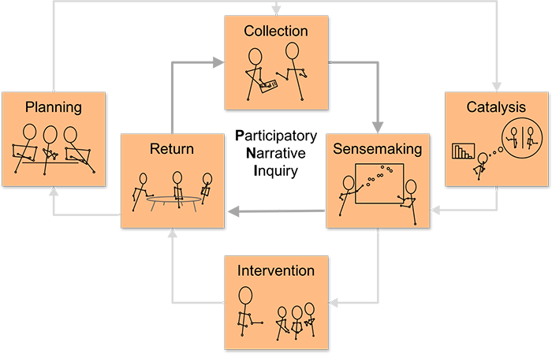

NarraFirma home page

The NarraFirma home page is the main page of your project. The triangle diagram describes a typical participatory narrative inquiry (PNI) project, with its three essential phases (in the triangle) and its three optional phases (outside the triangle).
What to do here
From NarraFirma's home page you can navigate to all phases of your participatory narrative inquiry (PNI) project. Click on the labeled boxes on the diagram (or on the buttons with the same names) to go to each phase of the project.
You can do the same thing here in the (parallel) help system. Use this diagram to get to the help pages for each phase (Planning, Collection, Catalysis, Sensemaking, Intervention, and Return).
You can return to NarraFirma's home page at any time. Just click the Home link at the top of any NarraFirma page in your project.
Frequently-asked questions
What is participatory narrative inquiry?
Participatory narrative inquiry (PNI) is an approach in which groups of people participate in gathering and working with raw stories of personal experience in order to make sense of complex situations for better decision making. PNI focuses on the profound consideration of values, beliefs, feelings, and perspectives through the
recounting and interpretation of lived experience. PNI draws on theory and practice in narrative inquiry, participatory action research, oral history, mixed-methods research, participatory theatre, narrative therapy, sensemaking, complexity theory, and decision support.
Where can I read more about participatory narrative inquiry?
The NarraFirma™ software is a companion to the book
Working with Stories in Your Community or Organization: Participatory Narrative Inquiry
(WWS) by Cynthia F. Kurtz. WWS
describes the PNI process in full, so you can do PNI projects yourself.
Cynthia wanted to write NarraFirma because readers of WWS kept asking her
to help them get started doing PNI.
NarraFirma follows the book's instructions step by step,
incorporating many of its questions and suggestions.
How does NarraFirma help with PNI projects?
NarraFirma is designed to support people using the PNI approach step-by-step as described in the WWS book.
You can use NarraFirma to:
- plan your Participatory Narrative Inquiry (PNI) project
- decide how you will collect stories
- write questions about stories
- plan group story sessions (and record what went on in them)
- collect or enter stories (and answers to questions)
- look at patterns in collected stories and answers
- build "catalytic" material
- plan sensemaking sessions (and record what went on in them)
- plan interventions (and record what went on in them)
- gather project feedback
- reflect on the project
- present the project to others
- preserve what you learned so you can use it on the next project
You can read more about the ideas behind NarraFirma at narrafirma.com.
Who created NarraFirma?
Cynthia Kurtz designed the overall NarraFirma application.
Her husband Paul Fernhout designed the supporting architecture
and wrote most of the code.
How can I get help with NarraFirma?
If you want some help, you can contact Cynthia for consulting or training on PNI projects and/or the NarraFirma software.
When does NarraFirma save my data? Where is the Save button?
Any changes you make to any field in the project are normally saved immediately to the server and are relayed to other connected users of the same project.
However, if you are viewing a project in "readonly" mode, changes are only saved locally and will be lost when you reload the page or close your browser.
You can backup and restore a project (including changes made in readonly mode) using the "Import/Export" page in the Administration section.
Where do I put the stories?
On the NarraFirma home page, click the Collection icon (or button). There you can collect stories over the internet or enter them by hand (from interviews or group story sessions). You'll need to create a story form first. Story forms include questions that elicit stories, questions about stories, and questions about people. NarraFirma supports mixed-methods research, which means that you'll be looking both at the stories and at (counts of) answers to questions about them.
Does NarraFirma work only with story data?
NarraFirma was designed to be used with stories. The stories can be brief anecdotes — in fact, that's usually the case. But in order for NarraFirma to work well for you, you do need to ask people to tell you what happened to them. If you don't have stories, you can use a variety of other software to collect and analyze data.
I have more general questions about NarraFirma and its uses. (Or, I found a bug in NarraFirma. Or, I have a suggestion about NarraFirma.)
Please visit the NarraFirma
web site, which has a general
support page, with a link to the bug-reporting and question-asking forum, and a frequently-asked questions list (about the software in general).